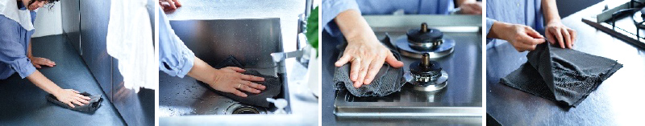

清掃雑貨ブランド『そうじの神様®』から、〈心地よい暮らしを手に入れるための方法〉を広めていくことで社会貢献を目指す主婦軍団『心地よい暮らし研究会』と共同企画によりうまれた「汚れたらめくっていつでも清潔 パタパタクロス」を発売致します。
【商品仕様】
商品名：汚れたらめくっていつでも清潔 パタパタクロス
用 途：シンクやキッチン周りの水・油汚れの拭き取り
組 成：マイクロファイバー「ベリーマ®」（ポリエステル、ナイロン）
サイズ：約265mm×265mm
入数：1枚入
価格：800円（税込880円）

【購入方法】
全国の専門店などで順次取り扱い開始
他amazon、楽天などネットショップにても順次発売
※「そうじの神様®」はKBセーレンの登録商標です。
「心地よい暮らし研究会」とは
各メンバー、人気ブログを主宰。ライフオーガナイザー、整理収納アドバイザーなどの資格を保有、各方面での経験を活かしながら個々に「暮らしのエキスパート」として活動。
それぞれの得意分野は違うものの、自分の家族のために、共通の目的である「心地よい暮らし」を研究し実践。5人が目指すのは、「多くの家庭の暮らしのベースを整え、ママの余裕をつくる」こと。雑誌やメディアとのコラボも多数。著書に「みんなの買い物大全（ワニブックス）」
以下メンバー：主宰ブログ（50音順・敬称略）
宇高有香：ウチカラ
大木聖美：我が道ライフ
近藤こうこ：40歳からはじめる「暮らしの美活」
中山あいこ：生活のメモ
マキ：エコナセイカツ
お問い合わせ先
KBセーレン株式会社
広報担当 TEL.06-6345-5204